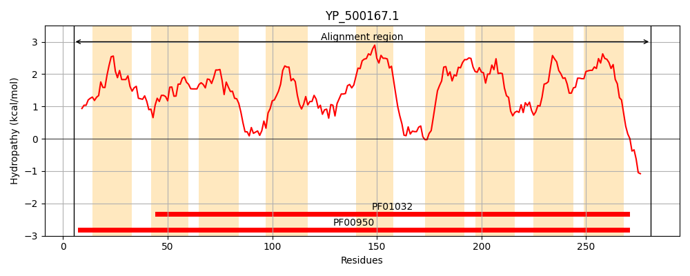
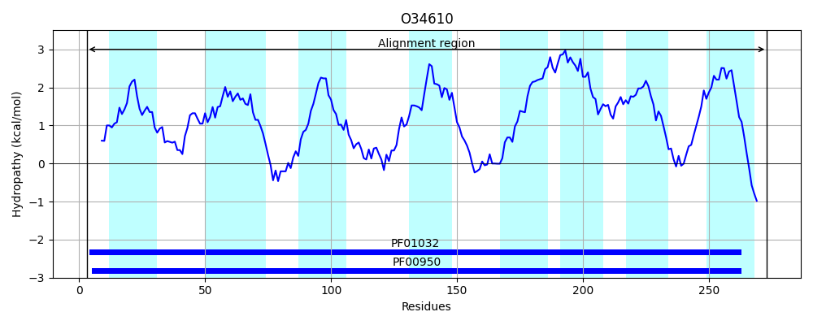
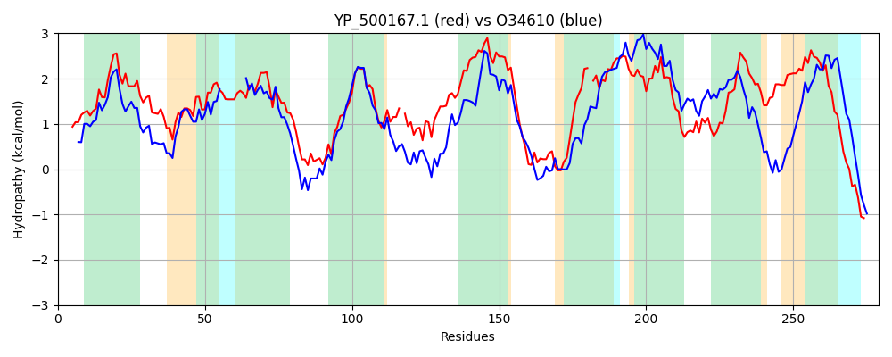

Hit Accession: O34610
Hit TCID: 3.A.1.15.11
Hit Description: gnl|BL_ORD_ID|7138 gnl|TC-DB|O34610|3.A.1.15.11 Probable zinc transport system permease protein adcB OS=Bacillus subtilis GN=adcB PE=2 SV=1
Mach Len: 279
e:0.000000
Query TMS Count : 9
Hit TMS Count: 8
TMS-Overlap Score: 6.200000
Predicted Substrates:CHEBI:10113;zinc(2+)
BLAST Alignment:
Score: 445 , Bit scores: 176 bits, E-value: 8.2e-54, Alignment length: 279, Percentage identity: 34
Query: 5 LLNFDFMRYSLISGILIGFIAPLIGAFIVVRRLSLIADALSHVTLGGISFGMFLLTIMPTLVFINPMWFGILFAIVGALLIEKLRTSYTAYQEIAIPIIMSAGIALSAIFISLADGF-NQEIVGLLFGSISAVNISDLTTIIVIAIIVVLFITLFYKELFILSFDEEYSKVIGIPKWIQFL-FIVIVAMVISASMRVVGILLVSALITLPIAISMRITKSFKQLILLSVFLGELSVILGLVLAFYMDISPGGVIVVLLVILLMITMAYQKMRMKFKKGA 281
+ + +FMR + ++G +I +AP++G ++V+RR +L+AD LSH++L G++ G FL T N I+ +GA+ IE +R +Y Y E++I I+M+AG++ + ISL+ G N I LFGS+ VN + I +I ++++L+ + + L++L+FDE +K GI + L F ++ + IS + ++G+LLVSAL+ LP A ++RI K F + + ++ + SV GL ++ + PG I +LL++LL+I A Q + KK A
Sbjct: 3 MFDLEFMRRAFLAGGMIAVMAPILGVYLVLRRQALMADTLSHISLSGVAIGFFLST--------NITAASIVVVTIGAIGIEYMRRAYRTYSEVSIAILMAAGLSFAMFLISLSKGTANMSIDQYLFGSLVTVNQQQVYIISIITLLILLYFIVLRRPLYLLTFDEATAKTSGINTNVLSLSFSIVTGLAISVIIPIIGVLLVSALLVLPAAFAIRIAKGFNMVFITAILISLFSVFTGLTSSYQLGTPPGPSITLLLIVLLLIGFAVQGVWTFIKKEA 273 | Protein Hydropathy Plots: |
|---|
|  |  |
Pairwise Alignment-Hydropathy Plot:
|
|---|
|  |